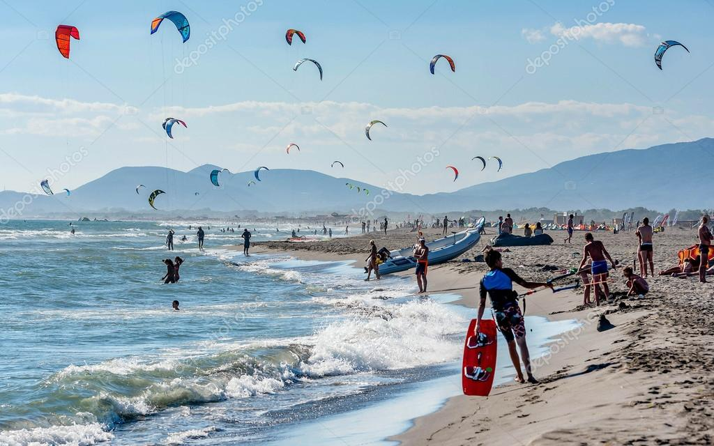

Zdravo svima! Ja sam Anesa Abazović.
Student sam na fakultetu za informacione sisteme i tehnologije i moj zadatak je da napravimo po želji web stranicu.
Naime, ovdje ću pisati o mom divnom gradu Ulcinju.
Nadam se da ću uspjeti da Vam dočaram koliko volim taj grad i kako ima jedinstvene boje ovog svijeta.
Magija koja vlada gradom
Ulcinj je predivni primorski grad koji posjeduje sve ljepote ovog svijeta.
Ulcinj posjeduje mnogobrojne pješčane plaže. Naravno, ukoliko volite jedrenje i surfovanje, imate tu mogucnost da uzivate bas na našim plažama
kao sto je Ada Bojana, koja je uvijek prepuna ljudi širom svijeta.

Život pored mora je jedinstven i čaroban. Moj rodni grad je bogat plažama i istorijom. To je grad koji ima dusu. To je grad snova.
Umirujuć zvuk mora
More je poput terapije. One koja ti dozvoljava da se maksimalno opustiš i uživaš u trenutku.
Želite vidjeti više slika Ulcinja?
Na sledecem linku mozete pristupiti slikama i osjetiti ih.
Slike Ulcinja Plaže koje Ulcinj nudi
Velika plaža (sastoji se iz mnogobrojnih manjih plaža)
Plaža Albatros (stjenovita plaža koja se nalazi u Borovoj šumi)
Mala plaža (nalazi se na glavnom šetalištu grada Ulcinja)
Plaža Liman I (manja plaža koja se nalazi sa sjeverne strane Starog grada)
Plaža Liman II (uglavnom izbetonirana plaža, nalazi se na prirodnoj uvali u blizni Staroga grada)